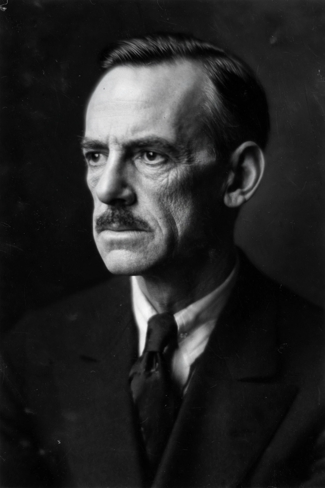

| Eugene O'Neill | |
|---|---|
 O'Neill in 1933 | |
| Born | 16 October 1888, New York City, US |
| Died | 27 November 1953 (aged 65), Boston, Massachusetts, US |
| Occupation | Playwright |
| Notable works | The Emperor Jones (1920); Anna Christie (1921); Strange Interlude (1928); The Iceman Cometh (1946); Long Day's Journey into Night (1956) |
| Awards | Nobel Prize in Literature (1936); Pulitzer Prize for Drama (four times) |
Eugene Gladstone O'Neill (16 October 1888 – 27 November 1953) was an American playwright awarded the Nobel Prize in Literature in 1936. His poetically titled, dark plays were among the first in American theatre to feature characters marginalized by society and to use vernacular dialogue, and he is widely credited with founding serious American drama — writing tragedies in a national literature previously dominated by melodrama and entertainment theatre.
O'Neill was born in a Broadway hotel room, the son of the matinee idol James O'Neill, famous for touring in The Count of Monte Cristo, and Mary Ellen Quinlan. His childhood was spent in theatres, trains, and Catholic boarding schools; his mother became addicted to morphine after his birth, and his elder brother Jamie drank himself to death — material O'Neill would transmute into his greatest work. Expelled from Princeton after a year, he shipped out as a merchant seaman, prospected for gold in Honduras, acted, and drank heavily. A suicide attempt and a 1912 diagnosis of tuberculosis forced a reckoning; in the sanatorium he began to write.
With the Provincetown Players from 1916, O'Neill developed rapidly from sea one-acts such as Bound East for Cardiff to full-length Broadway successes: Beyond the Horizon (1920) and Anna Christie won Pulitzer Prizes, and The Emperor Jones made his reputation with its expressionist experiment. The 1920s saw his most formally daring work — the masks of The Great God Brown, the nine-act Strange Interlude with spoken thought-asides, and the trilogy Mourning Becomes Electra (1931), recasting Aeschylus in Civil War New England. He won a record four Pulitzer Prizes for drama.
Ill health — a Parkinson's-like tremor that eventually made writing impossible — and the failures of his later cycle project darkened his last decades, spent in seclusion with his third wife, Carlotta Monterey. The Iceman Cometh (written 1939) premiered in 1946 to mixed notices. His masterpiece, the autobiographical Long Day's Journey into Night, was withheld by his instructions until 25 years after his death; Carlotta released it in 1956, three years on, and its premiere in Stockholm and on Broadway revealed a drama of family addiction and recrimination now ranked among the greatest plays in English. It won O'Neill a posthumous fourth Pulitzer.
O'Neill's work pursues the "pipe dreams" by which people sustain illusion against hopeless reality, the haunting of the present by the past, addiction, and doomed searches for belonging and faith — themes that link him backward to Greek tragedy and Ibsen and forward to Tennessee Williams and Arthur Miller, both of whom acknowledged his precedence alongside European contemporaries such as Jean Anouilh in remaking modern drama.